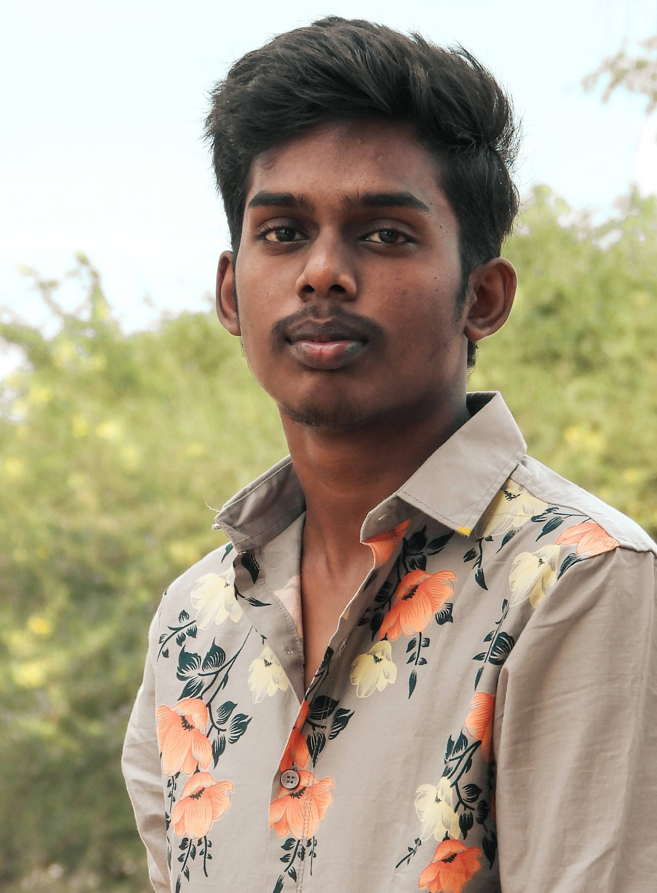

High School
Completed high school with a strong foundation in science and mathematics at Rose Mary MHSS, Tirunelveli.
Year: 2019-2021
I am a mechanical engineer with a passion for technology, automation, and innovative problem-solving. My expertise lies in mechanical design, embedded systems, IoT integration, and precision engineering. Over the years, I have worked on diverse projects, from developing cost-effective engineering tools to automation systems that enhance efficiency and user experience.
With hands-on experience in Fusion 360, Arduino, Raspberry Pi, and IoT technologies, I enjoy designing and prototyping solutions that bridge the gap between mechanical engineering and smart technology. My approach is centered on practicality, cost-effectiveness, and scalability, ensuring that every project I undertake delivers real-world impact.
I am always eager to explore new ideas and collaborate on innovative projects that push technological boundaries. Let’s connect and build something groundbreaking!
Completed high school with a strong foundation in science and mathematics at Rose Mary MHSS, Tirunelveli.
Year: 2019-2021
Pursued a Bachelor's degree in Mechanical Engineering at Government College of Engineering, Tirunelveli.
Year: 2021-2025
